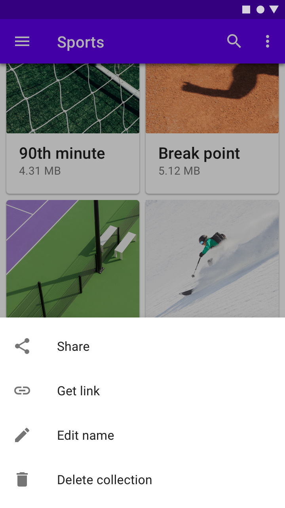

Introduction
BottomSheets是Design Support Library23.2版本引入的一個底部彈出框控件，通常用於顯示主畫面之外的額外訊息，默認是隱藏，或只顯示一小部分，並可以透過代碼或是手勢，來控制視圖是否要展開，本文主要是介紹如何使用BottomSheets，更多介紹可以查看Material-ComponentsMaterial-Design
The type of bottom sheets
BottomSheets可以分為以下兩種類型。
Persistent Bottom Sheet
為主畫面的一份部內容，默認被隱藏，只會顯示出一部分的內容，其高度elevation與主畫面為同一級別，簡單來說，此類型與另一項最大的區別，是在BottomSheets全部展開時，主畫面仍可以操作。
Ex: 可以在app中看到其應用場景(material.io)
Modal Bottom Sheet
通常用來取代menu或是dialog，此類型擁有比主畫面更高的高度elevation，也就是說，它並不是與主畫面處於同一級，而是像覆蓋在主畫面之上，與另一類最大的不同，就是他會阻止使用者與主畫面交互行為。
Ex: 可以在app中看到其應用場景(material.io)

接下來來看看，如何在代碼中實現。
Import Design Library
在app目錄下，build.gradle文件中，添加依賴庫
1 | android { |
Add Bottom Sheets
首先，我們來實現，如何在主畫面上，添加一個BottomSheets。
Create Bottom Sheets Layout
在layout資源目錄下，創建一個新layout，並在xml的ViewGroup中，添加下面幾個屬性
- behavior_hideable: 是否可以隱藏此視圖
- behavior_peekHeight: 添加在主畫面時，未展開狀態下，保留的高度
- layout_behavior: 定義了這個屬性，相當於告訴了
CoordinatorLayout，這是一個BottomSheets，@string/bottom_sheet_behavior是定義在支持庫中的字符串，等效於android.support.design.widget.BottomSheetBehavior。
bottom_sheets.xml，如下
1 | <?xml version="1.0" encoding="utf-8"?> |
Add Bottom Sheets to View
緊接著在主畫面中，添加bottom_sheets.xml，這邊要注意的一點是，Bottom Sheets Behavior是CoordinatorLayout的子類，所以在添加到主畫面時，務必注意主畫面的ViewGroup是否為CoordinatorLayout。更多CoordinatorLayout請參考另一篇文章[MaterialDesign] Android CoordinatorLayout
主畫面layout.xml下添加，如下
1 | <?xml version="1.0" encoding="utf-8"?> |
activity_main.xml佈局：
1 | <?xml version="1.0" encoding="utf-8"?> |
MainActivity.kt代碼如下:
1 | class MainActivity : AppCompatActivity() { |

Control Persistent Bottom Sheets
我們透過取得BottomSheets的Behavior來控制BottomSheets的狀態。BottomSheets總共有5種狀態
- STATE_COLLAPSED: 默認折疊狀態，只顯示底部一小部分佈局，顯示高度可以通過
app:behavior_peekHeight設置。 - STATE_DRAGGING: 過度狀態，此時
BottomSheets正在向上或向下拖動。 - STATE_SETTLING: 手勢離開視圖，自由滑動到停止的一小段時間
- STATE_EXPANDED: 佈局全展開狀態。
- STATE_HIDDEN: 默認無此狀態(可通過：
app:behavior_hideable啟用此狀態)，用戶能通過下向滑動，完全隱藏BottomSheets。
在代碼中實踐1
BottomSheetBehavior.setState(BottomSheetBehavior.STATE_COLLAPSED)；
BottomSheetDialog
為Modal Bottom Sheet的一種，與Persistent Bottom Sheets最大的不同點就是會阻止，用戶與主畫面交互，接下來讓我們看看如何在代碼中實踐。
1 | val view: View = layoutInflater.inflate(R.layout.bottom_sheet, null) |
佈局與上面layout.bottom_sheet.xml相同。效果如下:
BottomSheetDialogFragment
與BottomSheetDialog相同，會阻止主畫面的交互行為。實踐起來也很簡單。
Extends BottomSheetDialogFragment
首先，創建一個class繼承BottomSheetDialogFragment
BottomSheetFragment.kt:
1 | class BottomSheetFragment : BottomSheetDialogFragment() { |
佈局與上面layout.bottom_sheet.xml相同。接著在主畫面代碼中添加:
1 | val bottomSheetFragment = BottomSheetFragment() |
效果如下: